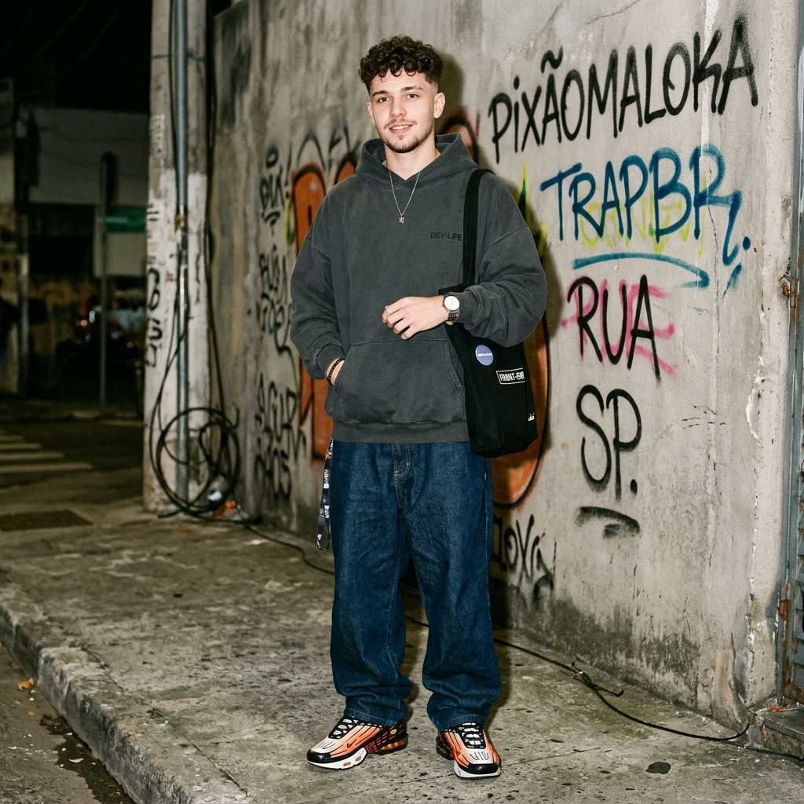
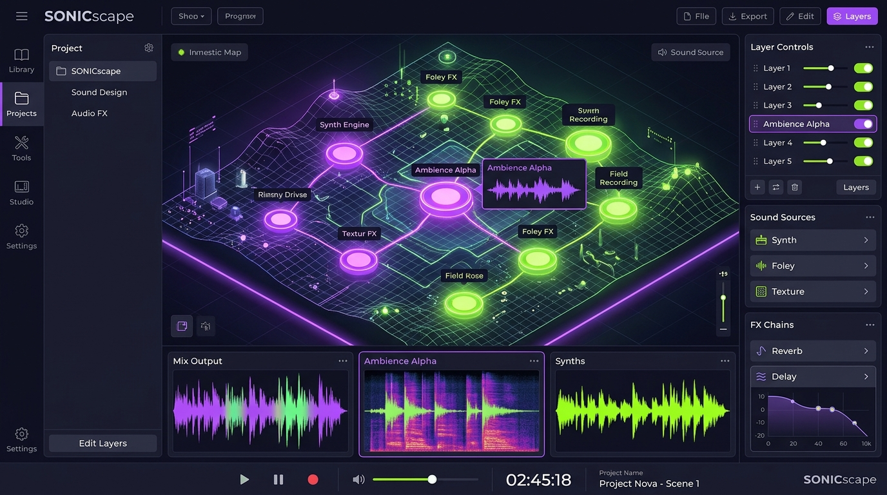
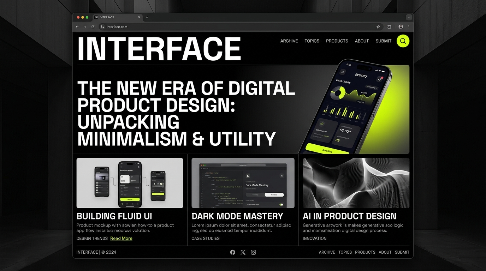
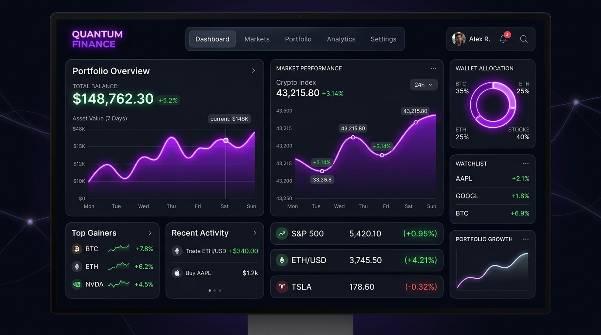
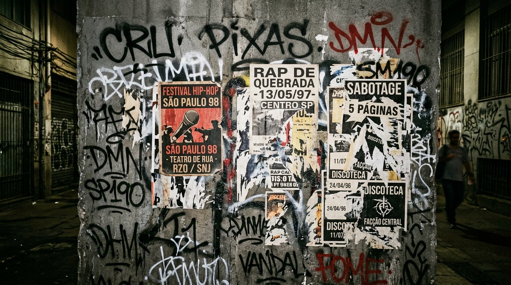
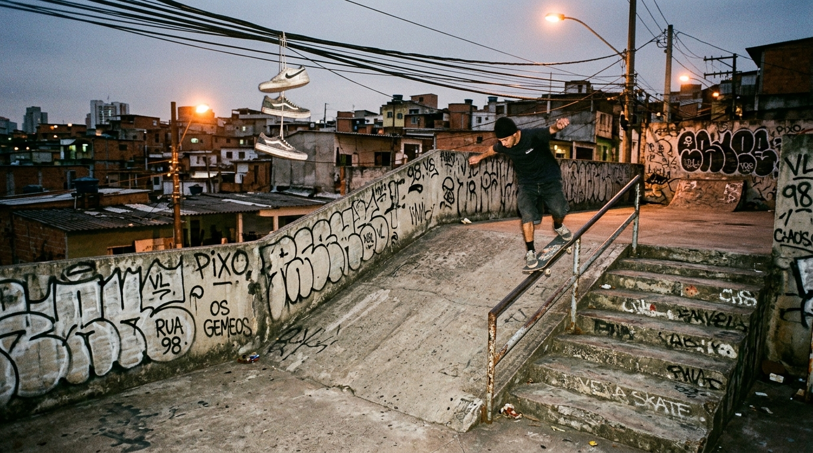
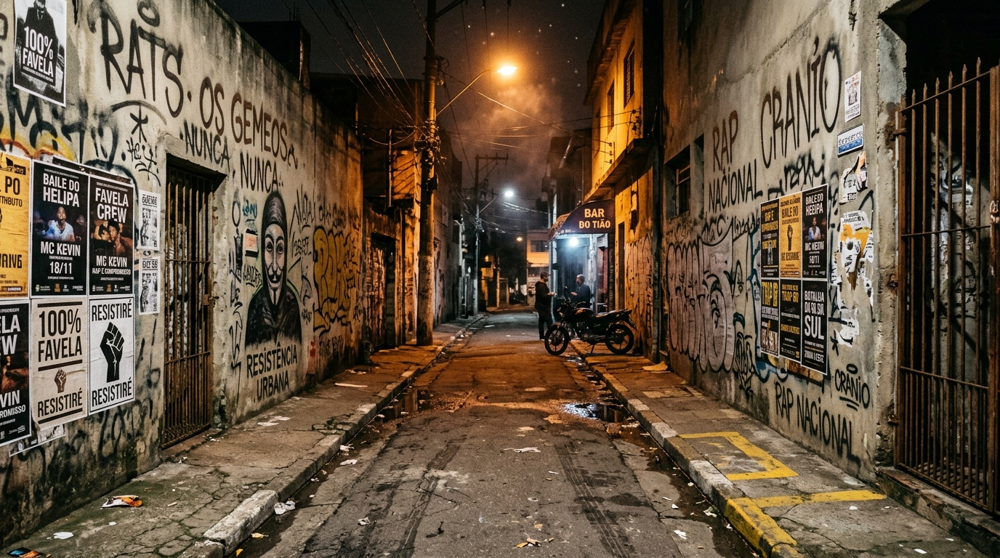

Three.js, WebGL & Shaders GLSL
Modelagem procedural em tempo real, shaders customizados de vértice e fragmento, materiais PBR, deformação senoidal e mapas espaciais interativos com raycasting e física de partículas.
Desenvolvedor Front-end • Three.js, Shaders & Web Audio • Brazilian Streetwear & 90s Game Aesthetics
Uma descida imersiva pelo universo underground paulistano. Desenvolvo interfaces brutas de alta fidelidade técnica, física de jogos e sintetizadores procedurais em JavaScript puro. Aperte Iniciar Descida para guiar o personagem de moletom oversized, calça baggy jeans e tênis Nike Air Max TN pelos níveis da cidade, ou role normalmente para ler.
Nível 01 • O Mural
Sou desenvolvedor front-end focado em criar soluções modernas, responsivas e de altíssimo impacto visual, unindo rigor técnico, performance a 60 FPS e identidade streetwear underground.
Influenciado pela cultura de rua brasileira, pelo graffiti e pela pichação paulistana, pelas produções do SonoTWS, pela vivência streetwear de pumapjl e pelos clássicos jogos urbanos do PlayStation 2. Busco transformar cada linha de código em uma peça autêntica de arte digital interativa.
O protagonista que desce por este portfólio carrega minha identidade: homem branco, cabelo castanho cacheado com corte americano (low/mid fade), moletom oversized chumbo, calça baggy jeans e o lendário tênis Nike Air Max TN com bolhas de ar laranjas Tuned Air.
Sou analítico e gosto de problema difícil: computação gráfica, malhas 3D procedurais, deformações senoidais em tempo real, física de colisão com o DOM e sintetizadores de áudio sem dependências externas.

Nível 02 • Portas de Aço & Amplificadores
Atuo na intersecção entre engenharia de software de ponta, design interativo experimental e cultura de rua. Cada projeto nasce com identidade única, arquitetura sem frameworks pesados e fluidez absoluta a 60 FPS.
Modelagem procedural em tempo real, shaders customizados de vértice e fragmento, materiais PBR, deformação senoidal e mapas espaciais interativos com raycasting e física de partículas.
Síntese sonora algorítmica direto no navegador sem arquivos de áudio externos: osciladores, filtros de ruído branco, envelopes ADSR, subgraves 808 e batidas no espírito do hip-hop analógico.
Motor de colisão AABB sólida mapeado diretamente sobre os cartões e títulos da árvore DOM real. Gravidade calibrada, duplo salto, soco no solo com ondas de choque físicas e controles adaptativos.
No corre diário utilizo JavaScript ES6+ Puro, HTML5 Semântico, CSS3 Experimental, Three.js r128, Canvas API 2D e Web Audio API. Versionamento via Git/GitHub, auditoria Lighthouse (Nota 100) e acessibilidade internacional WCAG 2.1 AA.
Nível 03 • Escadarias de Concreto & Skate Spot
A trajetória de disciplina, estudo contínuo e evolução nas ruas digitais: de entusiasta de código limpo a desenvolvedor de experiências imersivas autênticas.
Início dos estudos aprofundados em estruturas de dados, lógica computacional, JavaScript moderno e semântica web pura.
Desenvolvimento de interfaces completas, design tokens, tipografia brutalista inspirada em zines e animações via CSS sem dependências infladas.
Imersão profunda em Three.js, WebGL, shaders GLSL, síntese sonora com Web Audio API nativa e otimização para 60 FPS consistentes.
Criação de ecossistemas web jogáveis integrados com a árvore DOM, física realista, trilha sonora procedural e estética underground brasileira.
Nível 04 • Galpões & Monitores CRT
Obras interativas desenvolvidas combinando rigor matemático, fidelidade gráfica, áudio responsivo e design responsivo.

Destaque de Engenharia Gráfica e Som
Aplicação interativa inspirada no Overworld Audio com nós clicáveis em mapa tridimensional isométrico, equalizador com malhas procedurais e sintetizador de ondas senoidais em tempo real.
Trabalhei no motor de áudio via Web Audio API, nas sombras e luzes volumétricas via Three.js e na sincronia entre os transientes de áudio e a deformação dos blocos na tela a 60 FPS.
Three.js • WebGL • Web Audio API • Canvas 2D • JS Puro

Design Vanguardista • WCAG AA
Publicação digital inspirada nos estúdios Format e Fromanother, com revelações cinematográficas ao scroll, tipografia brutalista refinada e acessibilidade completa com suporte a leitores de tela.
Foquei na fluidez dos layouts em CSS Grid, controle de contraste visual e na navegação por teclado sem travas.
HTML5 Semântico • CSS Grid • IntersectionObserver • WCAG AA

Alta Performance Gráfica
Dashboard analítico financeiro com renderização contínua de cotações em Canvas 2D de alta taxa de quadros, interface dark mode com amarelo latão e verde neon, filtros avançados e feedback tátil em tempo real.
Canvas API 2D • JavaScript Puro • CSS Modular • Dark Mode
Nível 05 • Muro de Pichação & Lambe-Lambes
Desenvolvo plataformas web com foco em código limpo, experiência do usuário e partes em Three.js para criar momentos visuais inesquecíveis.
Tomo cuidado rigoroso para que tudo funcione perfeitamente tanto num smartphone básico quanto num monitor 4K de alta taxa de atualização.
Nível 06 • Oficina Subterrânea & MPC 2000
Espaço experimental para teste de geometrias paramétricas, deformação senoidal em tempo real, latas de spray e síntese sonora pura.


Utilizo Three.js r128, Shaders GLSL e a Web Audio API para criar experiências sensoriais que respondem ao clique, ao impacto dos saltos e às batidas de trap 808.
O objetivo do laboratório é explorar novas linguagens visuais para a web, desafiando a mesmice dos templates corporativos com código autoral de alto impacto visual e identidade underground.
Nível 07 • Painel Elétrico Industrial
O motor de física lê as caixas delimitadoras reais de cada elemento na árvore DOM e gera superfícies sólidas para o personagem andar, pular e descer.
A rolagem do navegador é sincronizada diretamente com o protagonista: quando ele salta pelos buracos de concreto, a câmera do viewport desce de forma suave via interpolação senoidal.
/* [SP-011] varre os elementos marcados no HTML e calcula as caixas sólidas */
function posicionarNoDocumento(elemento) {
let x = 0, y = 0, no = elemento;
while (no) {
x += no.offsetLeft;
y += no.offsetTop;
let pai = no.offsetParent;
if (pai) { x += pai.clientLeft; y += pai.clientTop; }
no = pai;
}
return { x: x, y: y, largura: elemento.offsetWidth };
}
/* calcula gravidade e impacto do Nike Air Max TN no concreto */
if (jogador.vy > 0 && pesAnteriores <= plat.y && pesAtuais >= plat.y) {
jogador.y = plat.y - jogador.altura;
jogador.vy = 0;
som.tocar("pouso");
efeitos3d.pouso(plat.elemento, fracX, impacto);
}Nível 08 • Discos de Ouro & Hall Underground
Padrões de excelência técnica alcançados com dedicação, consistência e disciplina na criação de software e experiências 3D.
Auditorias com nota máxima em Performance, Acessibilidade WCAG, Melhores Práticas e SEO em aplicações front-end web.
Google Lighthouse • Padrões Globais
Criação de universos 3D com texturas procedurais, shaders GLSL e gerenciamento otimizado de GPU a 60 FPS.
WebGL • Shaders • Math
Síntese de instrumentos e efeitos sonoros via Web Audio API pura, sem carregar arquivos pesados de MP3 ou WAV.
Web Audio API • Trap 808
Desenvolver na web não é apenas encaixar blocos prontos. É dominar os fundamentos da linguagem, respeitar a performance do aparelho de quem acessa e transformar código em arte que impacta quem usa.

Nível 09 • Skatepark & Batalha de Rimas
Experiências práticas construindo soluções completas sob pressão de tempo e entrega de alta fidelidade técnica.
Arquitetura de Alta Performance
Construção de uma experiência web jogável onde cada card e título do portfólio se torna uma plataforma sólida com física realista, gravidade calibrada, pulso de soco no ar e câmera lerp.
Física
Render
O protagonista conta com animações completas de respiração, corrida, piscar de olhos, salto duplo, rastro de poeira e impacto no chão com ondas de choque nas caixas vizinhas.
Canvas 2D • JavaScript Puro • Three.js • CSS Experimental
Síntese Sonora Procedural
Sequenciador polifônico de 32 passos construído em Web Audio API nativa com kick encorpado, subgrave 808 senoidal, caixas cortantes e chimbal com rolls sincopados.
O som reage diretamente à interação do usuário: pulos geram bipes em escala harmônica, quedas ativam transientes de ruído branco e a coleta de bits toca arpejos melódicos.
Web Audio API • Osciladores • Filtros Biquad • Síntese Sonora
Nível 10 • Terminal da Estação • Ponto Final
Quer falar sobre projetos desafiadores, oportunidades front-end ou trocar uma ideia sobre Three.js, WebGL e cultura urbana underground? Me chama pelos canais abaixo.